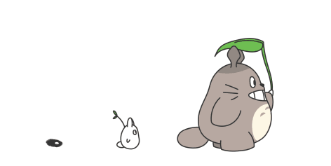

Nossa História
Conheça a jornada da TotoroTech, uma startup que nasceu da paixão por tecnologia e do desejo de transformar ideias em experiências digitais completas.
Nossa Jornada
O Início
A TotoroTech nasceu em Campina Grande (PB), quando cinco jovens apaixonados por tecnologia e inovação decidiram unir forças para transformar ideias em experiências digitais completas. O grupo, formado durante a graduação em Sistemas de Informação, enxergou uma oportunidade: oferecer soluções web personalizadas que integrassem design criativo, desenvolvimento front-end moderno e back-end robusto — tudo em um só lugar.
O Nascimento do Nome
O nome "TotoroTech" surgiu como uma homenagem ao espírito criativo e acolhedor que guia a equipe — inspirado no equilíbrio entre tecnologia e empatia. A proposta sempre foi clara: criar páginas e sistemas web que unam estética, desempenho e funcionalidade, colocando a experiência do usuário no centro de cada projeto.
Primeiros Passos
Nos primeiros meses, a equipe iniciou seus trabalhos com pequenos projetos de design e páginas institucionais para empreendedores locais. Com o tempo, o portfólio cresceu, incluindo sistemas completos de gerenciamento, lojas virtuais, landing pages responsivas e integrações com APIs modernas.
Missão
- Criar soluções digitais completas que conectem pessoas e ideias através da tecnologia
- Garantir qualidade e inovação em cada projeto
- Atender com excelência as necessidades dos clientes
Visão
Ser referência em desenvolvimento web criativo e eficiente no Brasil, reconhecida pela qualidade técnica e inovação de nossas soluções.
Valores
- Inovação constante em tudo que fazemos
- Colaboração e trabalho em equipe
- Transparência com clientes e parceiros
- Paixão pelo que fazemos

Assim como Totoro, queremos levar magia e inovação para o mundo digital
Faça parte da nossa história
Transforme sua ideia em um projeto incrível com a TotoroTech
Conheça nossa equipe!